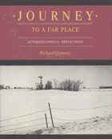

<body bgcolor="#FFFFFF" text="#000000" link="#0000FF" vlink="#CC0000" alink="#CC0000"><center><hr width="350" size="1" align="center" noshade>Charts a quest for intellectual and personal meaning<hr width="350" size="1" align="center" noshade><p><a href="https://cdcshoppingcart.uchicago.edu/Cart/ChicagoBook.aspx?ISBN=9780877227250&&PRESS=temple" target="_top">Buy this book!</a> | <a href="https://cdcshoppingcart.uchicago.edu/Cart/Cart.aspx?PRESS=temple" target="_top">View Cart</a> | <a href="https://cdcshoppingcart.uchicago.edu/Cart/Cart.aspx?PRESS=temple" target="_top">Check Out</a></p><p></p></center><!--none//--><h1>Journey to a Far Place</h1>
<H2>Autobiographical Reflections</H2>
<h3>Richard Quinney</h3>
<P>cloth 0-87722-725-X $49.50, Oct 90, <FONT COLOR=#990033>Out of Stock Unavailable</FONT>
<BR> 152 pp
8x10
</P><BLOCKQUOTE><I>"These essays are autobiographical, a record of, and a reflection on, my journey into the unknown. Through a recounting of the concrete experiences of my everyday life and through a reflection on these events, I hope to gain an understanding of who I am, what I was, and what I may become. Telling the story in the meditative essay, I attend to my common place in the universe."</I>
<br>&#151From the Preface<I></I></BLOCKQUOTE>
<p>Framed as an autobiography, this book charts a quest for intellectual and personal meaning. Born and raised on a Wisconsin farm, Richard Quinney rejected farm life in favor of an academic career in which, he believed, his daily pursuits would hold a larger significance. Early in this career, Quinney found himself on a fast track in academia but neither his immersion in publishing and lecturing nor his involvement in the social movements and politics of the 1960s and 1970s seemed to supply answers to the existential questions that plagued him. As he moved from job to job, place to place, attempting to come to terms with the moral and political implications of his work in criminology and Marxist theory, he realized that he was searching for "the treasure of feeling at home in the world."
<p><I>Journey to a Far Place</I> maps the author�s difficult pilgrimage, on which he finds that reasoned thought alone cannot answer the important questions of being human. The 89 photographs are themselves an essay that trace a great circle from his place of origin all the way to China and to Ireland and then home. In the literary tradition of Thoreau, Dag Hammarskj�ld, Alan Watts, Peter Matthiessen, and Bruce Chatwin, Richard Quinney�s meditative narration explores the meaning of worldly existence by experiencing "the holy other in everyday life." With tender reminiscence and intimate detail, he uncovers the roots of his life in a spiritual quest for home that will feel familiar to, and provide illumination for, anyone who seeks meaning within modern Western society.
<BR>&nbsp;<h2>Excerpt</h2><P>Excerpt available at <a href="http://www.temple.edu/tempress">www.temple.edu/tempress</a></p>
<BR>&nbsp;<h2>Contents</h2><P>
<p>Preface
<br>1. A Place called Home
<br>2. Mystery of the Marsh
<br>3. Leaving the Country
<br>4. On the Road
<br>5. Lodging for the Night
<br>6. A Traveler of Country Roads
<br>7. A Winter's Tale
<br>8. The Journey East
<br>9. A Dark Voyage
<br>10. On the Way Home
<br>Bibliography
</P><BR>&nbsp;<H2>About the Author(s)</H2>
<table><tr><td valign="top"><img src="/tempress/authors/736_au.gif" height="90" width="75"></td><td width="100%" valign="middle"><p><b>Richard Quinney</b>, Professor of Sociology at Northern Illinois University, has published numerous books and articles dealing with the sociology of crime and social problems.</P></td></tr></table>
<BR><H2>Subject Categories</H2>
<p><A HREF="/tempress/general.html" TARGET="_top">General Interest</a>
<BR><A HREF="/tempress/sociology.html" TARGET="_top">Sociology</a>
<BR><A HREF="/tempress/art.html" TARGET="_top">Art and Photography</a>
</p>
<BR><h2 class="inpageheading">In the series</H2>
<P><I><a href="http://www.temple.edu/tempress/visual.html" onMouseOver="window.status='Click for other books in this series!'; return true;" onMouseOut="window.status=''; return true;" target="_top">Visual Studies</a></i>, edited by Douglas Harper.
</p><p><I>Visual Studies</I>, edited by Douglas Harper, will consist of a broad range of books that regard photography, film, and other visual media as vehicles for exploring social and cultural themes. We are developing a series of illustrated books that draw on photographs as primary documents and that include a substantial analytic text; however, we will also consider unillustrated manuscripts on visual subjects. Douglas Harper is a photographer and sociologist who teaches at Potsdam College of the State University of New York.</p>
<p align="center"><a href="https://cdcshoppingcart.uchicago.edu/Cart/ChicagoBook.aspx?ISBN=9780877227250&&PRESS=temple" target="_top">Buy this book!</a> | <a href="https://cdcshoppingcart.uchicago.edu/Cart/Cart.aspx?PRESS=temple" target="_top">View Cart</a> | <a href="https://cdcshoppingcart.uchicago.edu/Cart/Cart.aspx?PRESS=temple" target="_top">Check Out</a></p><p><font face="Arial" size="1"><a href="copyright.html" onMouseOver="window.status='Web Copyright Policy';return true;" onMouseOut="window.status=''" title="Web Copyright Policy">&copy;</a> 2015 <a href="http://www.temple.edu" target="new" onMouseOver="window.status='Link to Temple University home page';return true;" onMouseOut="window.status=''" title="Link to Temple University home page">Temple University</a>. All Rights Reserved. http://www.temple.edu/tempress/titles/736_reg.html</font></p>